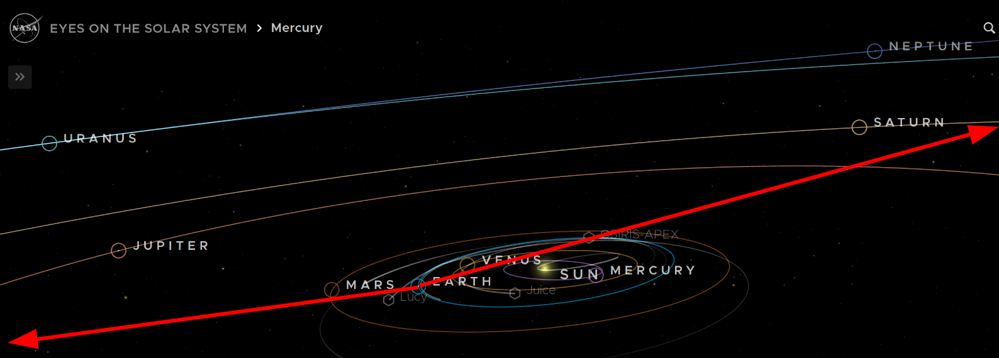
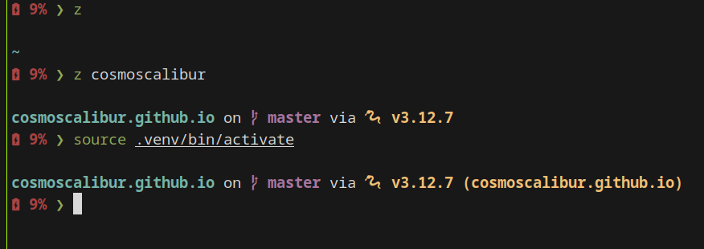
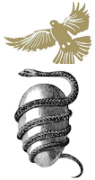

Entradas en English
Prompt Engineering: Technical Skill or Scam?
- 2026-02-23
Prompt engineering was sold as the skill of the future. Courses, certifications, job titles, books, and even graduate programs sprang up around the idea that knowing how to talk to an AI was a differentiating technical competency. But was it really, or was it just a temporary patch for the limitations of language models?
Seekee: free alternative to watch movies and series
- 2026-02-22
In a previous post I talked about Stremio and Torrentio as the best free alternative to Netflix, and I still think it’s an excellent option, especially on a computer or Android TV. However, today I want to talk about Seekee, an alternative that has surprised me with its ease of use and its extensive content catalog.
Authentication Error in Antigravity and AmpCode on Windows
- 2026-02-21
If you’ve installed Antigravity or AmpCode on Windows 11 and found it impossible to log in, you’re not alone. This authentication issue is more common than it seems and the usual solutions don’t always work. Here’s how I solved it.
Install Docker on Manjaro
- 2025-04-23
Now that I use Manjaro, it’s worth reviewing the steps to install Docker on Manjaro.
Hallucination in Artificial Intelligence
- 2025-02-13
Robots also dream. Yes, and they dream while awake. The hallucination in language models (or artificial intelligences) is inevitable. Not everything generated by an AI can be trusted, and you should have appropriate criteria to judge the information produced. In general, AI is a good assistant, but only that—its purpose is to assist you, and the final decision must always be yours. Here I will illustrate why this is important.
Install Your Local AI Assistant
- 2025-02-02
If you wish to install your own artificial intelligence assistant on your device, free of charge, without creating accounts, exposing your data, and all under your control, this is possible thanks to Ollama. Available for Windows, Linux, and Mac. I will explain how you can obtain the assistants for Qwen, Llama, and Deepseek.

No module named pkg_resources found in UV environment
- 2025-01-26
Starting February 8, 2026, setuptools v82 removed the pkg_resources module.
If you experience this error after that date, the likely cause is the
setuptools upgrade. The solution is to pin the version to the previous one,
e.g., setuptools<82.
Planetary alignment 2025
- 2025-01-19
We began the year 2025 with a couple of important astronomical events, and one of these is the planetary alignment. The other event is the maximum brightness of what has been called the comet of the century, C/2024 G3 (ATLAS), but let’s talk about the planetary alignment.
Mounting a disk in Linux and dirty volume error
- 2025-01-10
I hadn’t used my external hard drive for some time, which was formatted as NTFS, and when I went to use it (mount it) after updating the operating system, an error about a dirty volume appeared. If you’ve encountered this too, here’s how to solve it.
Configuration of Python Projects and Tools with UV
- 2025-01-06
We will create a Python project using uv, which utilizes the
pyproject.toml format for its configuration, making it easier to port
across different environments. This format is also already widely used by other
package managers of Python, and is commonly used for configuring utilities.
Wayland and Hybrid Graphics Issues in Linux
- 2024-12-18
Hybrid graphics cards are a strategy used by modern computers to incorporate two graphics cards: one integrated and one dedicated, with different capabilities and energy consumption. The idea is not to use the dedicated card unless necessary for 3D rendering. However, this is not a resolved issue in Linux and affects native applications running on Wayland, which is the new and modern protocol for server-side graphics communication used by window compositors in Linux (replacing X11), that utilize Vulkan.
Configuring Starship on Manjaro and Zsh
- 2024-12-15
Recently, I’ve been switching multiple tools in my daily work, including changes in handling the Linux terminal. One of these changes is the shell prompt (the terminal indicator), and I’m using starship. However, there are some undocumented details on how to enable it on Manjaro with zsh, which I’ll explain here.
Connecting to a Cloud SQL instance on Manjaro
- 2024-12-10
Since I’m currently in a full system installation process following the transition from (X/K)Ubuntu to Manjaro, I’ll explain how to connect to a Cloud SQL instance on Manjaro.
Wi-Fi issues in Linux
- 2024-12-07
If Wi-Fi starts to disconnect randomly and upon reviewing the list of networks, these have disappeared, there are some points to consider evaluating.
What to do after installing Manjaro KDE 24?
- 2024-12-05
I recently decided to switch to Manjaro KDE (24.1) and I’m very happy with the change. So, taking this opportunity, I’ll share some things to do after completing the installation.
“Distrohopping”: Switching Linux Distributions Without Losing Your Mind
- 2024-12-03
I’ve recently switched Linux distributions twice, which got me thinking about the associated effort and how it could be reduced. It also reminded me of the concept of “distrohopping” and the discussions about this practice, where many claim that it’s a waste of time and offers little value. However, I disagree and want to share the value I see in it and how to make it easier.
Watch free movies with Stremio and Torrentio
- 2024-10-21
Tired of streaming subscriptions draining your wallet? Perhaps not, but I’ll share a trick to comfortably, safely, and freely access a lot of content. I’ll be talking about Stremio and an extension that pulls content from torrents.
Merging Video and Audio with FFmpeg and Bash
- 2024-10-20
Recently, my girlfriend asked me to help her download the videos of a course before access to the account expired, and it involved downloading videos from Vimeo. However, the download trick for these videos requires combining the audio and video later, so I’ll explain how to do this using FFMPEG and Bash.
Adding Google Ads to Sphinx
- 2024-09-25
Following my recent adjustments to my blog, I wanted to give it another chance, and some people may not like it, but I’m putting up Google Ads and seeing if this can generate some income now that many of us use blockers (yes, even me). I’ll tell you how to configure it through modifying the default templates.

Adding Logo and Favicon to Sphinx
- 2024-09-24
A new step in my blog, I decided to leave a personal touch through a logo, something simple but distinctive from pre-downloaded images like before, and which is why I hadn’t configured it yet. I’ll tell you how to configure the logo and favicon for Sphinx.
UV: A Fast Alternative to PIP and VENV
- 2024-06-30
UV is a package manager and virtual environment alternative for Python,
developed in Rust, which promises to be very fast in the processes it aims to
replace those of PIP and VENV. In this sense, all you need to do is add uv
before the usual instructions, and it should work (except for some particular
cases of compatibility or lack of implementation).
Install Rust on Linux
- 2024-06-15
During my journey to learn Rust, I will be sharing some steps with you. This time, let’s cover how to install Rust on Linux and prepare ourselves to use it in VSCode and Notebook.

Proton: Compatibility Mode of Steam
- 2024-06-04
Do you want to play that Steam game that is supported on Windows, but not on Linux? I’ll tell you how to use the compatibility mode of Steam for all games.
Migrating my blog from Nikola to Sphinx
- 2024-05-24
Migrating from a static generator to another isn’t an entirely transparent process, so I’ll explain some simpler steps to help you migrate your blog from Nikola to Sphinx.
Creating a blog with Sphinx
- 2024-05-16
Finally, I’ve taken the step of restarting my blog, and with it, the migration process that I wanted to undertake. On this process, I’ll be telling you about it in several entries, since the migration isn’t complete yet, and this is the first entry regarding this topic, covering the basics so you don’t fail on your attempt.
Setting Up RetroArch on Steam
- 2021-12-14
RetroArch is a cross-platform (supported platform downloads) and open-source emulator and game aggregator. Installing RetroArch through Steam offers advantages by integrating Steam Play features and Steam Cloud save states. This also benefits the community by providing an additional distribution method.
Install snap packages in Linux Mint 20
- 2020-06-29
Do you already have Linux Mint 20 and do you want to install Snap packages? Mint has decided to disable the default installation of Snap, and it is necessary to change the apt configuration in order to do so.
Compute specific and intersection elements with R
- 2020-06-13
This is my first posts about R language, my first english post and my first R
package: venn.compute, which
use case in bioinformatics is comparing list of genes.

Computing Geodesic Distance with Python
- 2020-05-10
I’d like to share how to compute the geodesic distance between two places using GeoPy (a Python library), one of the many things I’ve needed for my exploration in projects related to geographic information systems and routing.
Creating Documentation for a Python Project with Sphinx
- 2020-01-06
Without a doubt, an important step in any development project (and not just software projects) is generating documentation. For software projects, it’s possible to rely on tools that help automate documentation generation by extracting comments from the code, using keywords and markup language to modify style in the text, or including other elements such as images, equations, and links.
Do we attract each other gravitationally?
- 2019-11-08
Gravitational interaction or what is commonly called gravitational force (let’s be clear about two different things here), usually appears in our imagination as a dominant interaction that ultimately controls the movement of large celestial bodies and keeps us attached to Earth. However, this interaction isn’t exclusive to stars; it exists between all objects with mass, and if so, why aren’t we attracted gravitationally by other people?
Installing Packages in Linux (Mint)
- 2019-10-22
In Linux, we now have many more options for installing our favorite and daily-use programs according to personal interests in reducing disk space, increasing stability, improving security, always having the latest version, having very good integration with the operating system, or not requiring administrator permissions. Some of these strategies even make it possible to use the same mechanism across multiple Linux distributions, thus enabling a smoother transition.
Order and Origin of the Greek Cosmos
- 2013-06-18
Second article based on my talk on «Greek Cosmogony and Cosmology» of astronomy in the Parque de los Deseos on May 14, 2013 (the first was Greek Cosmogony).
Greek Cosmogony
- 2013-05-26
The cosmogony and cosmology of the ancient Greeks were deeply intertwined. While its cosmological elements have been detached from mythology since the reasoning of the first Greek philosopher, Thales of Miletus, the origin of some of these elements can be traced back to it.
Asimov in Science
- 2013-01-18
While Isaac Asimov is commonly known as a science fiction and mystery writer (the latter being less widely known) and a great science popularizer, he was also a scientist. This article aims to highlight Asimov’s scientific contributions and academic background, often overshadowed by his literary achievements.
Newton’s Double Birthday and the Gregorian Calendar
- 2013-01-04
The commemoration of Sir Isaac Newton’s birth presents a curiosity: it is celebrated on both December 25, 1642, and January 4, 1643. This dual observance stems from the shift between the Julian and Gregorian calendars. This article explores the reasons behind this double celebration, delving into the historical context of the calendar reform and its impact on the dating of historical events.
Evolution in the Greeks
- 2012-05-13
Speaking a little about biological evolution yesterday, starting the activities of the astrobiology cycle at the Orión Club, the concern about the Greek origin of evolution arose, which is why I took the task of looking for a little and making this brief review.